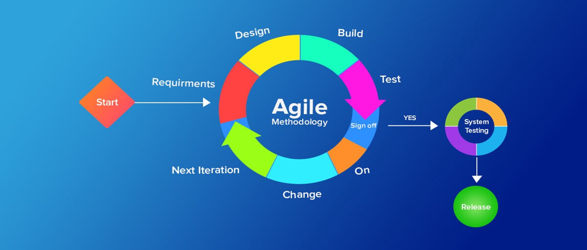

Back to Homepage
Agile Development Cycle

Scrum Workflow
Visualizing the iterative development process
Product
Owner
Defines product vision, prioritizes backlog, and ensures ROI
Development
Team
Cross-functional team that delivers increments each sprint
Client
Provides feedback and validates the product increments
Feedback Loop
Continuous feedback from client to improve product
Increment / product delivery
Potentially shippable product increment delivered each sprint
product backlog
A
B
C
D
E
Prioritized list of all features, requirements, and work items
sprint backlog
A
D
E
Selected items from product backlog to complete in current sprint
Scrum Master
Daily Scrum
planning
review
retrospective
Facilitates Scrum process, removes impediments, and coaches team
Sprint (2-4 weeks)